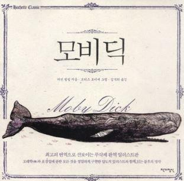

소개
향고래는 향유고래 또는 말향고래 라고 불린다.
이빨을 가진 동물중에서 지구상에 존재했던 어떤 종보다 크다. 소설 [모비 딕]에 등장하는 고래로 유명하다
외관
머리에 밀랍으로 가득찬 경랍기관이 있어, 거대한 사각형 머리가 특징이다. 몸길이는 17m~21m 이며 몸무게는 수컷 35~74t, 암컷 20~36t 정도이다.
온몸이 회색이며 배쪽에 담색 얼룩점이 있는데 몸 빛깔은 나이를 먹을수록 흰색으로 변하는 경향이 있다.
등지느러미는 없지만 파도모양의 피부돌기가 있다.가슴지느러미는 몸에비해 상당히 작다.아래턱은 가늘고 길며 위턱의 이빨은 퇴화되어 작아져서 눈에 잘 안띈다.
특징
잠수능력이 뛰어나서 1시간 30분이나 잠수하며 수심 2,250m의 심해까지 내려가기도 한다.
오징어나 대왕오징어를 주식으로 한다.
4년마다 한 배에 한 마리를 낳는데 임신기간은 15~16개월이다. 세계바다 각지에 분포한다.
